고장사례 및 검색 › 폭스바겐 티구안 2.0 TDI
폭스바겐 티구안 2.0 TDI 엔진오일 누유 — 프론트케이스 · 오일팬 누유 작업
- 차량
- 폭스바겐 티구안 2.0 TDI · 164,274 km
- 증상
- 엔진오일 누유 및 데후(디퍼런셜) 오일 누유로 점검 요청
- 원인
- 프론트케이스 누유 · 오일팬 누유 (점검 중 리어 디퍼런셜 누유도 확인)
- 수리내역
- 프론트케이스 누유 작업 (타이밍벨트 탈부착) · 오일팬 누유 작업 · 엔진오일 교환
- 교환부품
- 프론트케이스 · 오일팬 · 타이밍벨트 · 크랭크 오일씰 · 엔진오일
- 결과
- 2026-09-07 출고
정비 사진 14장
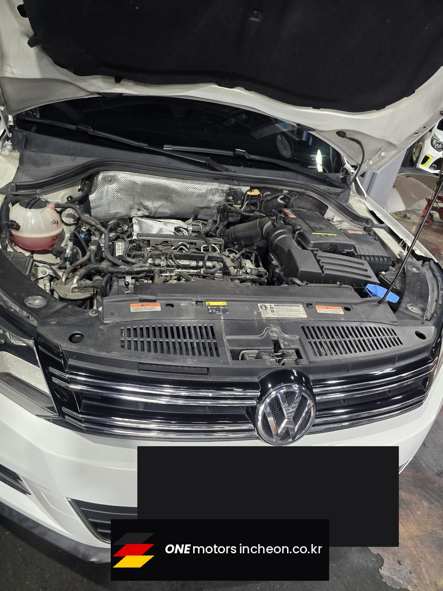
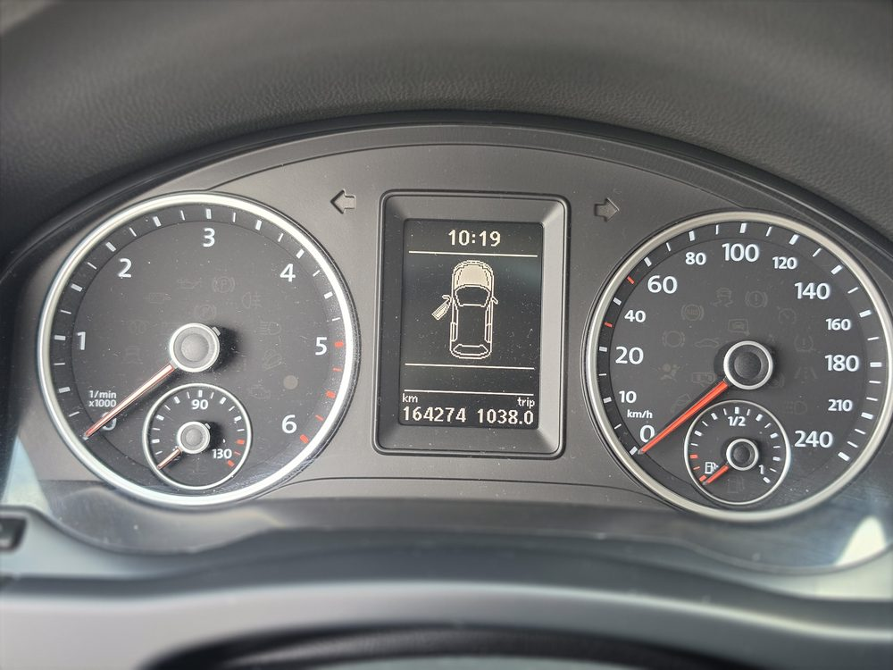
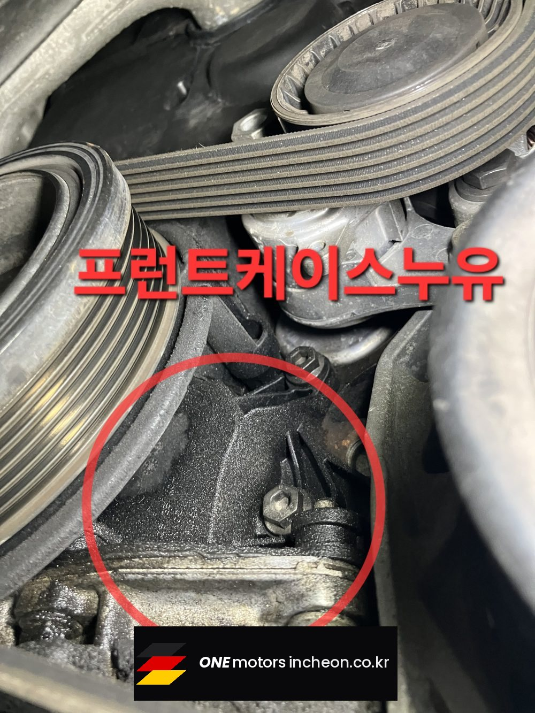
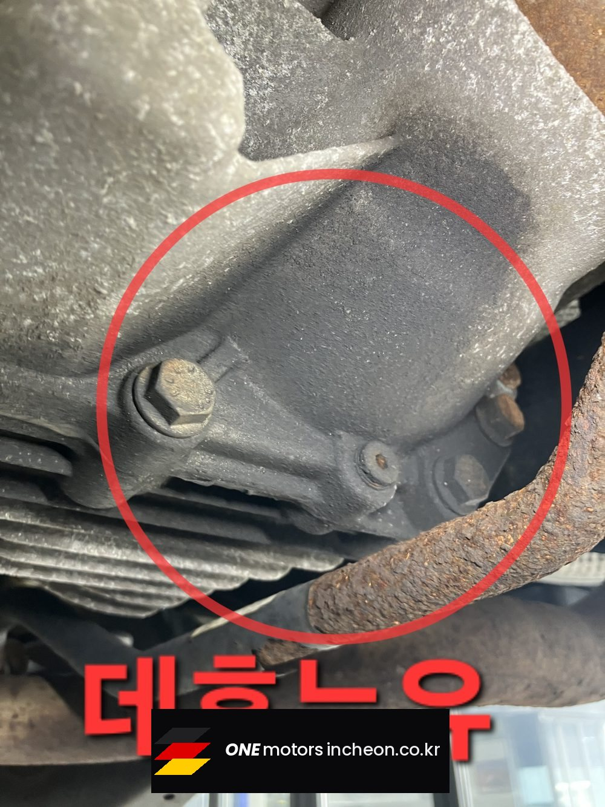
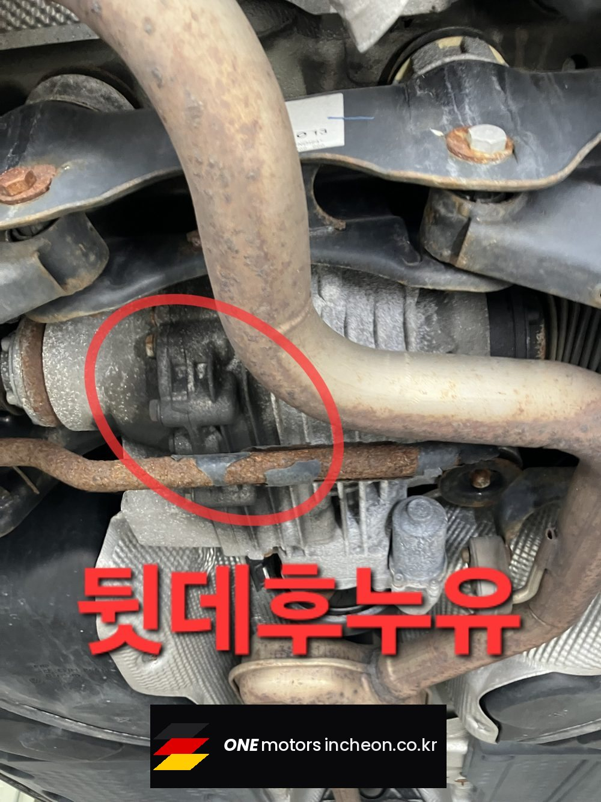
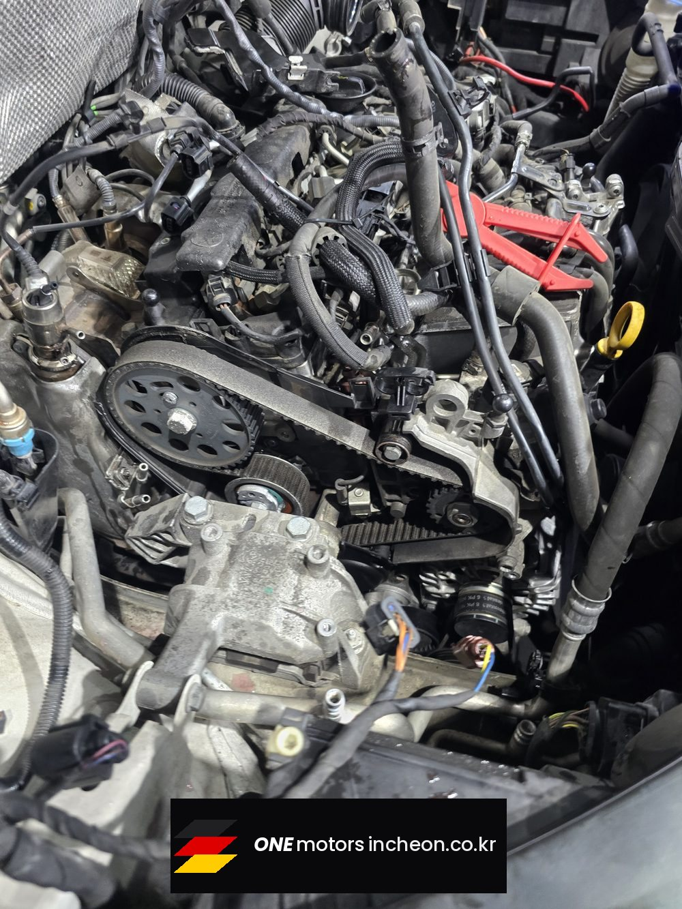
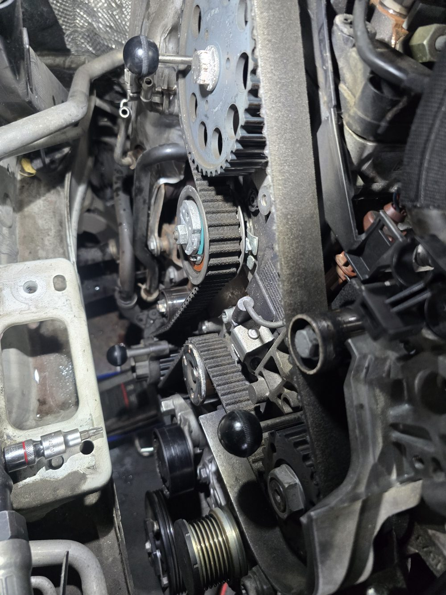
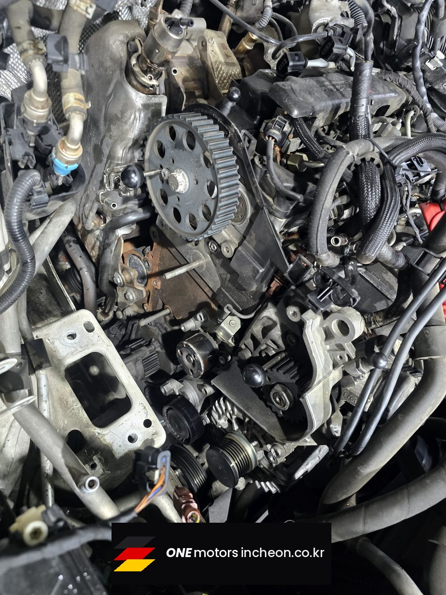
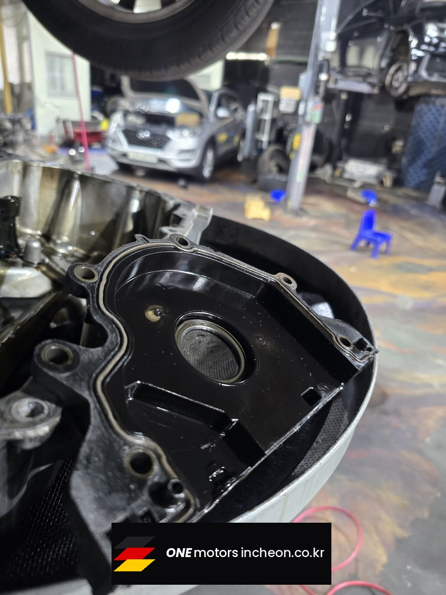
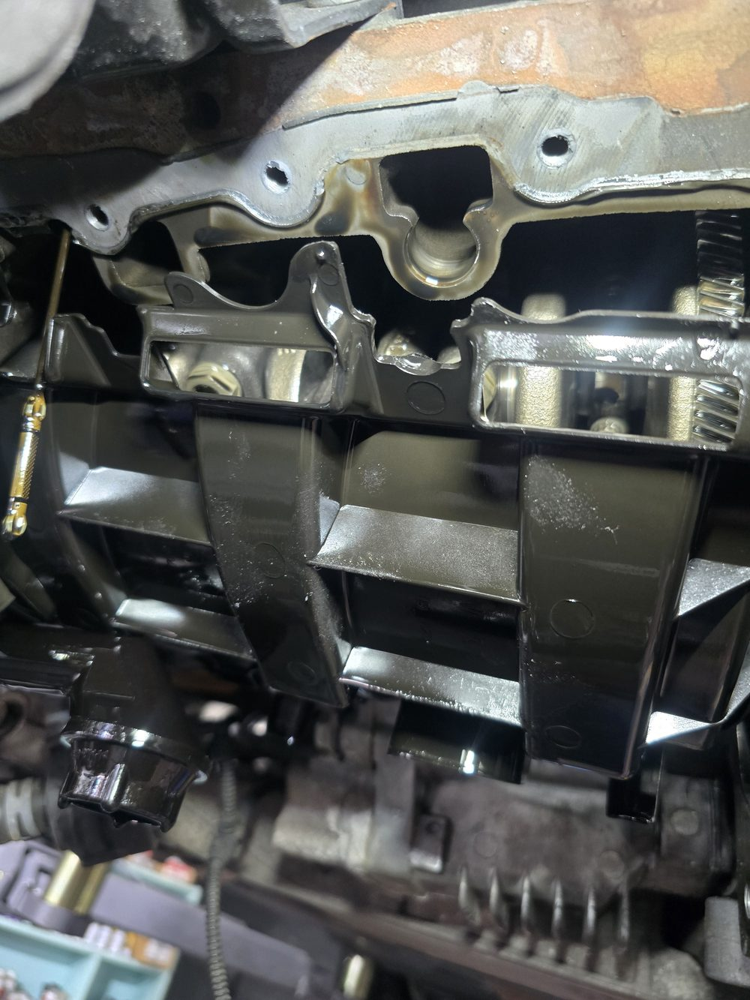
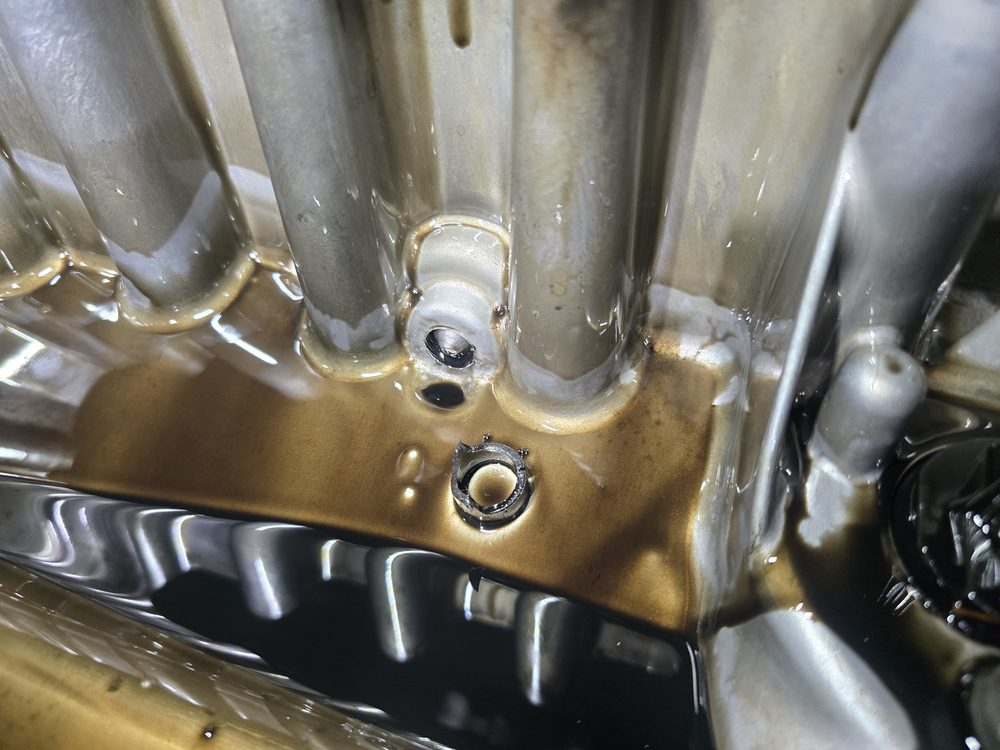
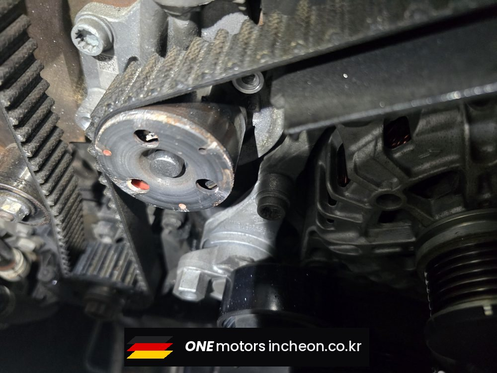
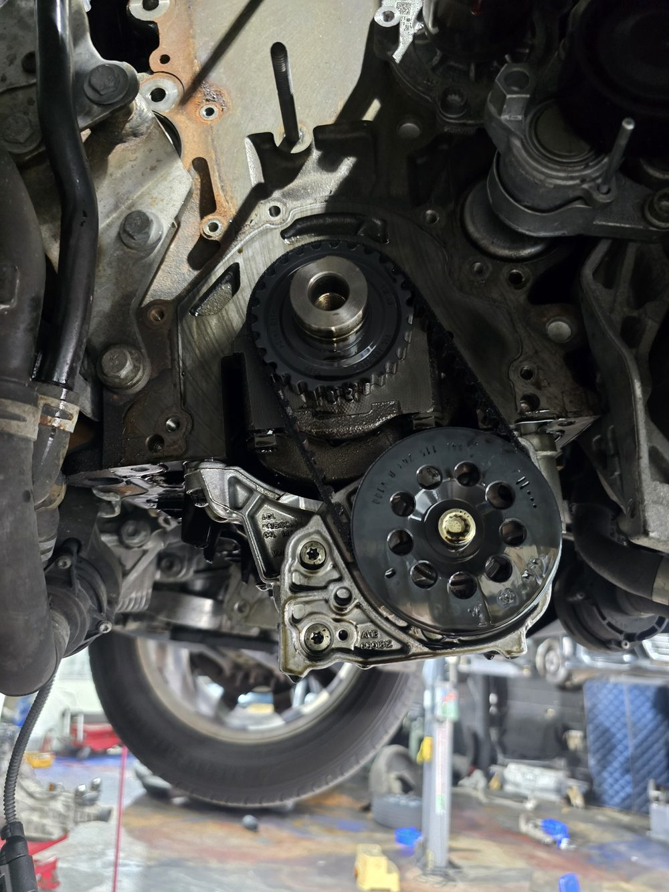
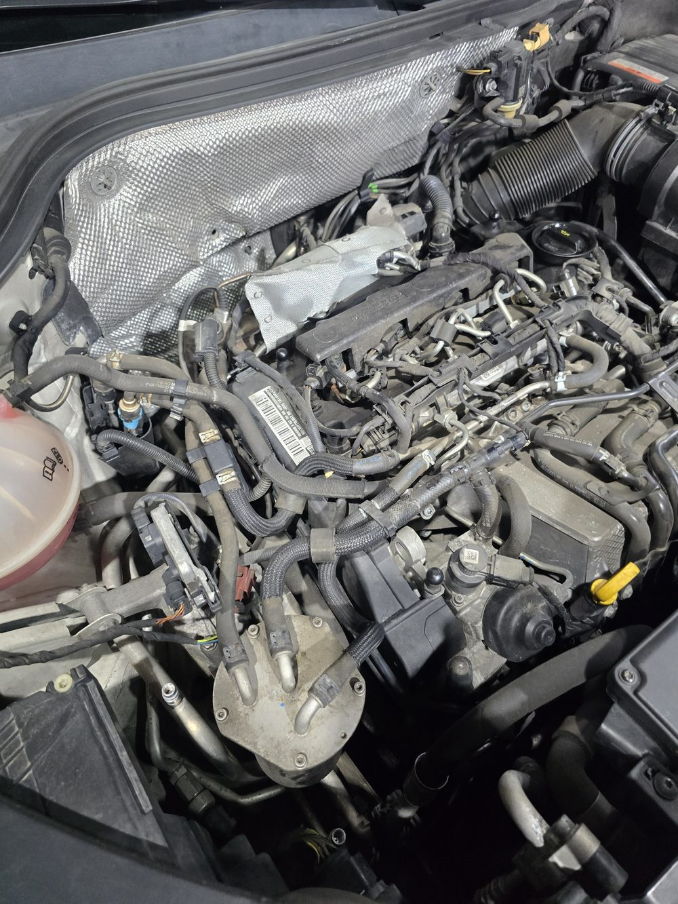
이런 증상으로 찾아오십니다
- 엔진오일 누유 프론트케이스 누유 오일팬 누유 크랭크 리데나 누유 데후 누유 디퍼런셜 누유 타이밍벨트 탈부착 바닥에 엔진오일이 떨어져요 엔진오일이 자꾸 줄어요 티구안 누유 인천 폭스바겐 정비소
비슷한 증상이 있으시면 전화로 상담해 주세요. 차종과 연식, 증상만 알려주시면 예상 원인을 안내해 드립니다.
원모터스 인천점는 제조사 공식 서비스센터가 아닌 독립 정비업체입니다. 정비 내용은 차량 상태에 따라 달라질 수 있습니다.